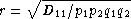

Haplotype frequencies are estimated using the iterative Expectation-Maximization (EM) algorithm (Dempster et al. 1977; Excoffier & Slatkin 1995). Multiple starting conditions are used to minimize the possibility of local maxima being reached by the EM iterations. The haplotype frequencies reported are those that correspond to the highest logarithm of the sample likelihood found over the different starting conditions and are labeled as the maximum likelihood estimates (MLE).
The output provides the names of loci for which haplotype
frequencies were estimated, the number of individual genotypes in
the dataset (before-filtering), the number of
genotypes that have data for all loci for which haplotype
estimation will be performed (after-filtering),
the number of unique phenotypes (unphased genotypes), the number of
unique phased genotypes, the total number of possible haplotypes
that are compatible with the genotypic data (many of these will
have an estimated frequency of zero), and the log-likelihood of the
observed genotypes under the assumption of linkage
equilibrium.
A series of linkage disequilibrium (LD) measures are provided for each pair of loci.
Example 3.9. Sample output of all pairwise LD
II. Multi-locus Analyses ======================== Haplotype/ linkage disequlibrium (LD) statistics ________________________________________________ Pairwise LD estimates --------------------- Locus pair D' Wn ln(L_1) ln(L_0) S # permu p-value A:C 0.49229 0.39472 -289.09 -326.81 75.44 1000 0.8510 A:B 0.50895 0.40145 -293.47 -330.83 74.73 1000 0.8730 A:DRB1 0.44304 0.37671 -282.00 -309.16 54.32 1000 0.7540 A:DQA1 0.29361 0.34239 -257.94 -269.88 23.88 1000 0.9020 A:DQB1 0.39266 0.37495 -275.58 -297.61 44.07 1000 0.8140 A:DPA1 0.31210 0.37987 -203.89 -206.99 6.21 1000 0.8840 A:DPB1 0.42241 0.40404 -237.84 -262.05 48.42 1000 0.5930 C:B 0.88739 0.85752 -210.36 -342.68 264.63 1000 0.0000*** C:DRB1 0.48046 0.47513 -280.34 -317.65 74.62 1000 0.2140 C:DQA1 0.42257 0.49869 -250.36 -276.72 52.73 1000 0.0370* C:DQB1 0.45793 0.49879 -269.54 -305.27 71.46 1000 0.0580 C:DPA1 0.37214 0.46870 -208.99 -215.36 12.74 1000 0.7450 C:DPB1 0.46436 0.36984 -242.45 -268.45 52.01 1000 0.6290 B:DRB1 0.50255 0.41712 -286.79 -320.50 67.42 1000 0.4140 B:DQA1 0.41441 0.42844 -259.86 -279.56 39.40 1000 0.3880 B:DQB1 0.49040 0.43654 -277.29 -308.12 61.65 1000 0.2870 B:DPA1 0.29272 0.38831 -213.43 -218.01 9.14 1000 0.8780 B:DPB1 0.46082 0.38001 -247.83 -272.77 49.86 1000 0.7320 DRB1:DQA1 0.91847 0.91468 -164.06 -254.54 180.96 1000 0.0000*** DRB1:DQB1 1.00000 1.00000 -147.73 -283.09 270.72 1000 0.0000*** ...
We report two measures of overall linkage disequilibrium.
D' (Hedrick, 1987) weights
the contribution to LD of specific allele pairs by the product of
their allele frequencies;
Wn (Cramer, 1946) is a
re-expression of the chi-square statistic for deviations between
observed and expected haplotype frequencies. Both measures
are normalized to lie between zero and one.
D'Overall LD, summing contributions
(D'ij =
Dij /
Dmax) of all the
haplotypes in a multi-allelic two-locus system, can be measured
using Hedrick's D' statistic, using the
products of allele frequencies at the loci,
pi and
qj, as weights.
Wn
Also known as Cramer's V Statistic
(Cramer, 1946),
Wn, is a second
overall measure of LD between two loci. It is a re-expression
of the Chi-square statistic, XLD2,
normalized to be between zero and one.
When there are only two alleles per locus,
Wn is equivalent to the
correlation coefficient between the two loci, defined as
.
For each locus pair the log-likelihood of obtaining the
observed data given the inferred haplotype frequencies
[ln(L_1)], and the likelihood of the data
under the null hypothesis of linkage equilibrium
[ln(L_0)] are given. The statistic
S is defined as twice the difference between
these likelihoods. S has an asymptotic
chi-square distribution, but the null distribution of
S is better approximated using a randomization
procedure. The empirical distribution of S is
generated by shuffling genotypes among individuals, separately
for each locus, thus creating linkage equilibrium (#
permu indicates how many permutations were carried
out). The p-value is the fraction of
permutations that results in values of S
greater or equal to that observed. A p-value
< 0.05 is indicative of overall significant LD.
Individual LD coefficients, Dij, are stored
in the XML output file, but are not printed in the default text
output. They can be accessed in the summary text files created by
the popmeta script (see Section 2.1.3, “What happens when you run
PyPop?”).
Example 3.10. Sample output of haplotype estimation parameters
Haplotype frequency est. for loci: A:B:DRB1 ------------------------------------------- Number of individuals: 47 (before-filtering) Number of individuals: 45 (after-filtering) Unique phenotypes: 45 Unique genotypes: 113 Number of haplotypes: 188 Loglikelihood under linkage equilibrium [ln(L_0)]: -472.700542 Loglikelihood obtained via the EM algorithm [ln(L_1)]: -340.676530 Number of iterations before convergence: 67
The estimated haplotype frequencies are sorted
alphanumerically by haplotype name (left side), or in decreasing
frequency (right side). Only haplotypes estimated at a frequency
of 0.00001 or larger are reported. The first column gives the
allele names in each of the three loci, the second column provides
the maximum likelihood estimate for their frequencies,
(frequency), and the third column gives the
corresponding approximate number of haplotypes (# copies).
Example 3.11. Sample output of estimated haplotype frequencies
Haplotypes sorted by name | Haplotypes sorted by frequency haplotype frequency # copies | haplotype frequency # copies 0101:1301:0402: 0.02222 2.0 | 0201:1401:0402: 0.03335 3.0 0101:1301:1101: 0.01111 1.0 | 3204:1401:0802: 0.03333 3.0 0101:1401:0901: 0.01111 1.0 | 0301:1401:0407: 0.03333 3.0 0101:1520:0802: 0.01111 1.0 | 0301:1301:0402: 0.03333 3.0 0101:1801:0407: 0.01111 1.0 | 0201:1401:1101: 0.03332 3.0 0101:3902:0404: 0.01111 1.0 | 0301:1520:0802: 0.02222 2.0 0101:3902:1602: 0.01111 1.0 | 0101:4005:0802: 0.02222 2.0 0101:4005:0802: 0.02222 2.0 | 0301:3902:0402: 0.02222 2.0 0101:8101:0802: 0.01111 1.0 | 0201:1301:1602: 0.02222 2.0 0101:8101:1602: 0.01111 1.0 | 0218:1401:0404: 0.02222 2.0 0201:1301:1602: 0.02222 2.0 | 0210:5101:1602: 0.02222 2.0 0201:1401:0402: 0.03335 3.0 | 0218:1401:1602: 0.02222 2.0 0201:1401:0404: 0.01111 1.0 | 0101:1301:0402: 0.02222 2.0 0201:1401:0407: 0.02222 2.0 | 2501:4005:0802: 0.02222 2.0 0201:1401:0802: 0.01111 1.0 | 2501:1301:0802: 0.02222 2.0 ...